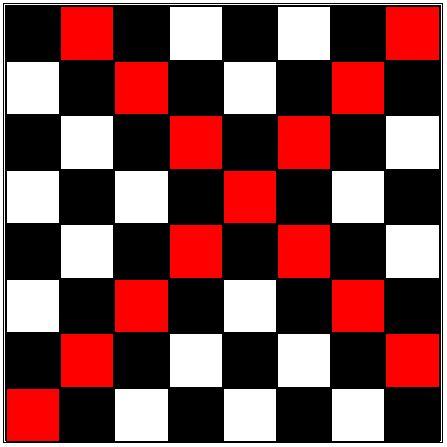

Raw Problem
Your task is to write a JS program that traces the path of Bishop from the checkbox that
is clicked by the user.
You are provided with Boilerplate HTML and CSS code,
that builds a chessboard on the page.
The HTML has majorly 3 types of components in the
following inheritance:
div.board > div.row >
div.checkbox
Here,
1. div.board:
1.1. contains
the entire chessboard
1.2. has 8 div.row as immediate children
2.
div.row:
2.1. contains a single horizontal row in the chessboard
2.2. there
are a total of 8 div.row
2.3. each div.row contains 8 div.checkbox
3.
div.checkbox:
3.1. depicts a single checkbox in the board
3.2. there are a
total of 64 div.checkbox in the board
3.3. each checkbox has a defined style.backgroundColor
of white or black
Your task is to:
1. Trace the path of Bishop from
any checkbox that is clicked by user.
2. Look at the below example to understand the path of
a Bishop (cross diagonals).
3. Tracing the path means to set the background color property as
'red' for all the checkboxes on the path.

Note:
Additionally as a bonus, you can also try to refresh the board if
the user clicks on some other checkbox, and then trace the path from the new checkbox. (Code for
this is provided in the solution)
Write the solution program in script.js file.
Don't make any changes to the boilerplate code.